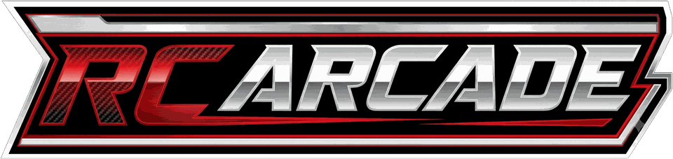
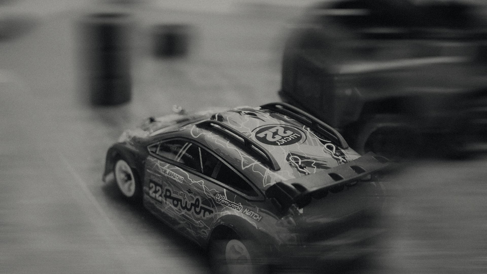
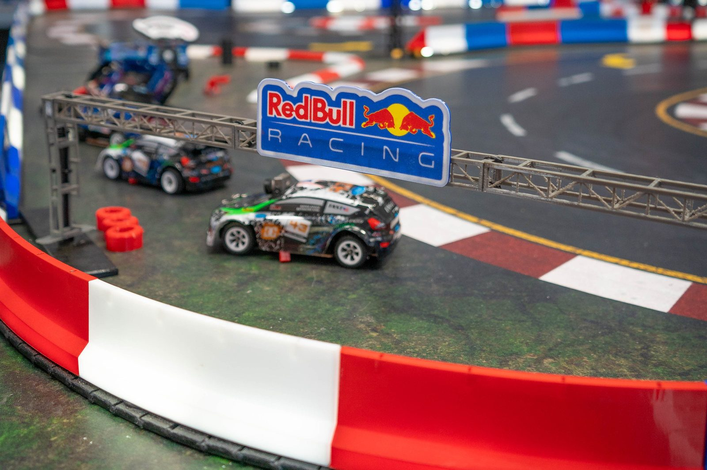

Elige
Selecciona tu coche y tu circuito.


Telemetría en cabina
Coches RC reales, cámara FPV en primera persona y cockpit con volante y pedales, sobre un circuito físico.
Mejor vuelta 00:42.381
La misma secuencia que ya funciona en la operación real.
Selecciona tu coche y tu circuito.
Cockpit con volante, pedales y pantalla FPV.
Cámara en primera persona, sensación real de pilotaje.
Tiempos de vuelta y posición medidos en directo.
Sesión real, con telemetría en pantalla durante la carrera.

Ninguna otra atracción combina coche real, cámara FPV y cockpit físico sobre un mismo circuito.
El sistema se adapta al espacio disponible, desde una instalación compacta hasta el circuito completo.
Sesiones y competiciones programables: el flujo de clientes no depende de horarios fijos.
Cada sesión genera material visual y conversación. La telemetría y el cronómetro son parte del espectáculo.
Hasta seis simuladores simultáneos sobre un circuito compartido.
Medidas reales de espacio (m²). Pendientes de confirmar con el cliente — ver TASKS.md. No se rellenan aquí con suposición.
El operador incorpora la atracción de forma permanente en su centro de ocio.
Contratación para ferias, activaciones de marca o eventos puntuales.
Liga o ranking entre pilotos. Refuerza la propuesta; no es la puerta de entrada.
Bloque no construido. Falta confirmar ubicación de la unidad abierta al público, si opera de forma regular y cómo se reserva. Ver ESTRUTURA-DO-SITE.md, bloque 7.
Formulario o WhatsApp — no construido. Falta teléfono, email o WhatsApp comercial, y si el cliente prefiere formulario o contacto directo. Ver ESTRUTURA-DO-SITE.md, bloque 8.